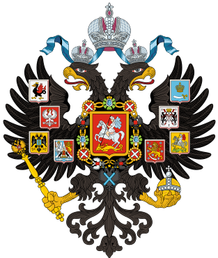

Русский поэт, драматург и прозаик, заложивший основы русского реалистического направления, литературный критик и теоретик литературы, историк, публицист, журналист.
Родился 6 июня 1799 г., Москва, Российская империя

Умер 10 февраля 1837 г. (37 лет), Санкт-Петербург, Российская империя
Александр Сергеевич Пушкин
Краткая информация
Основные творческие периоды
- Лицейский
- Петербургский
- Период южной ссылки
- Крым
- Кишенёв и одесса
- Ссылка в Михайловсом
- Московский период
- Болдинская осень
- Позднее творчество

Возвращение в родительскую семью окончилось серьезным скандалом. Отец следил за Александром, что сильно раздражало свободолюбивого Пушкина. В итоге вся родительская семья переехала жить в Петербург. Пушкин остался в Михайловском еще на 2 долгих года на попечении няни, Ирины Родионовны, Настроение у поэта было подавленным, но он использовал это уединение для плодотворной работы и чтения книг.
В восстании декабристов, в 1825 году, к которому имели отношение многие его друзья, Пушкин участия не принимал. Ему были сообщены ложные даты восстания, что, возможно, уберегло великого поэта от серьезных последствий. Зная его стихотворения, например, «К Чаадаеву», смелые эпиграммы и вспыльчивый характер, можно предположить, что он мог принять участие в восстании.
После коронования Николая I, поэту было велено прибыть в Москву для аудиенции с императором. Ссылка окончена, а поэту предложено покровительство. Он освобожден от цензуры.
Поэт подавал прошения о поездке за границу, но они оставались без ответа. Тогда он уехал самовольно за что Пушкину был вынесен строгий выговор. Итогом поездки стали стихи «Обвал», «Кавказ», «На холмах Грузии...».
В 1828 году Пушкин знакомится с красавицей Гончаровой, которую нежно называет Натали. Не смотря на препятствия, возникшие на пути к их браку, через несколько лет влюбленные поженились. Страстная любовь Пушкина была дополнена спокойной и уравновешенной любовью его избранницы. У супругов родилось четверо детей.
Стихи
- Евгений Огенин
- 1823-1830 гг.
- Написан уникальной онегинской строфой
- Зимнее утро
- 1829 г.
- Зимний вечер
- 1825 г.
- Зима!... Крестьянин торжествуя...
- 1826 г.
- Няне
- 1826 г.
- Посвящён няне Пушкина Арине Родионовне